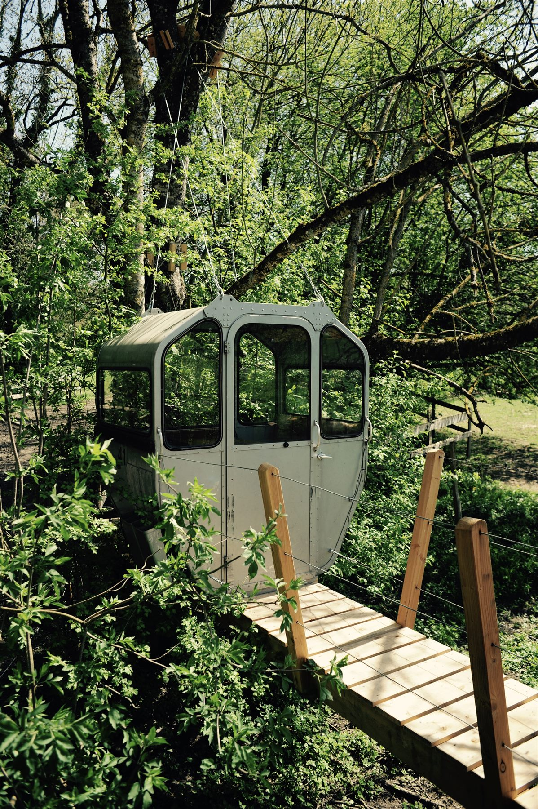
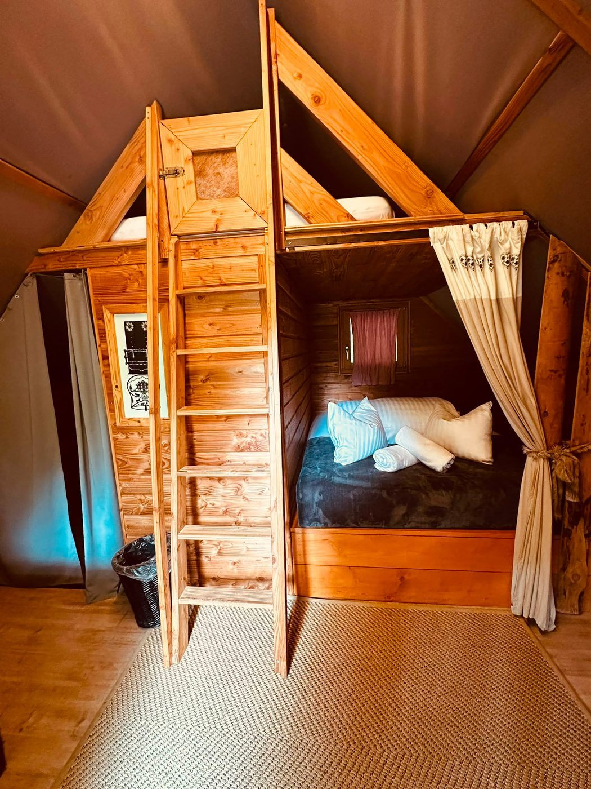

Au-dessus des animaux
L'Arche d'Alanis
« Parce que son petit cœur est une Arche de Noé. »
« Parce que son petit cœur est une Arche de Noé. »
Perchée à environ 3 mètres du sol — pour laisser les animaux passer dessous —, au-dessus des chevaux, avec leur passage à toute heure. Sa propre télécabine suspendue dans l'arbre, et un lit hamac pour dormir à la belle étoile.


Consultez le calendrier en direct, puis réservez en ligne en quelques clics.